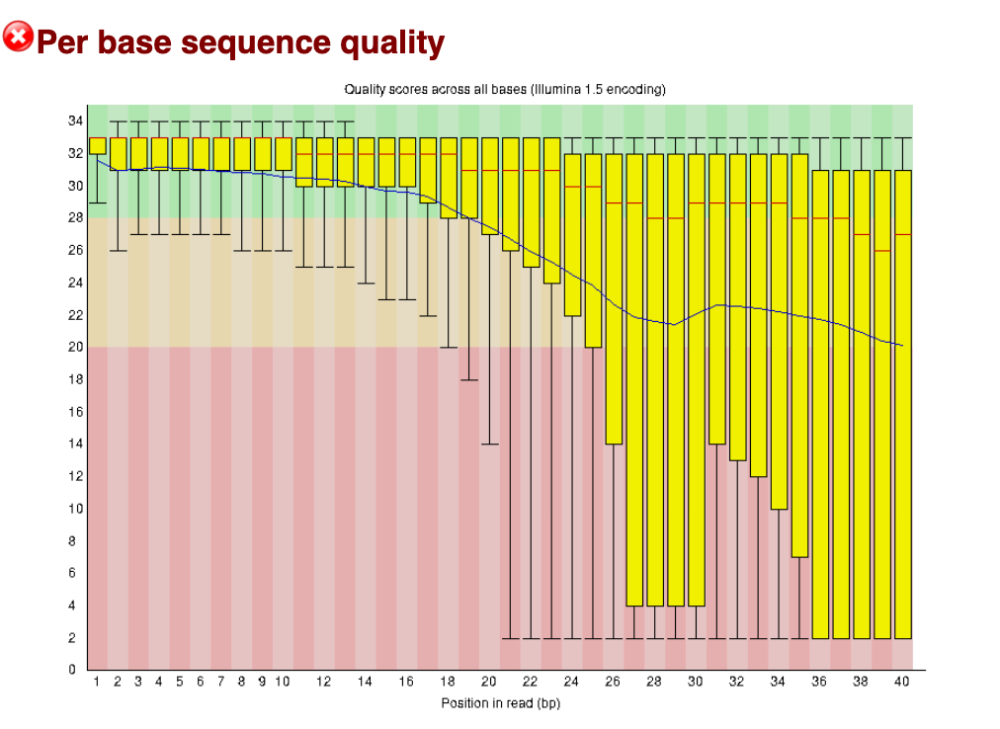
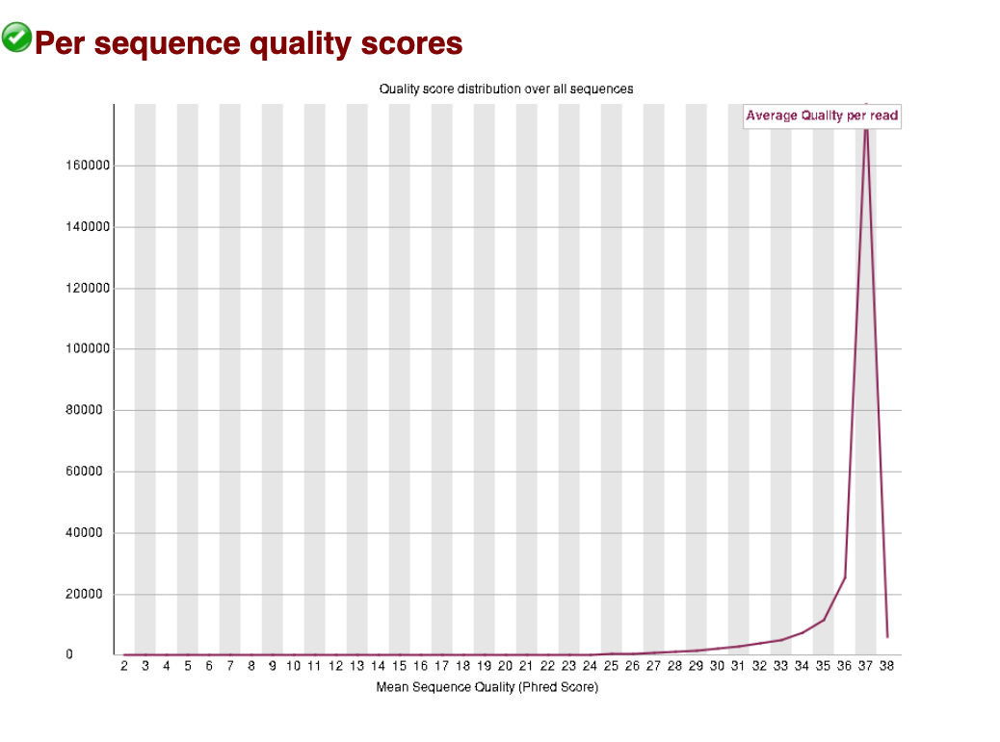
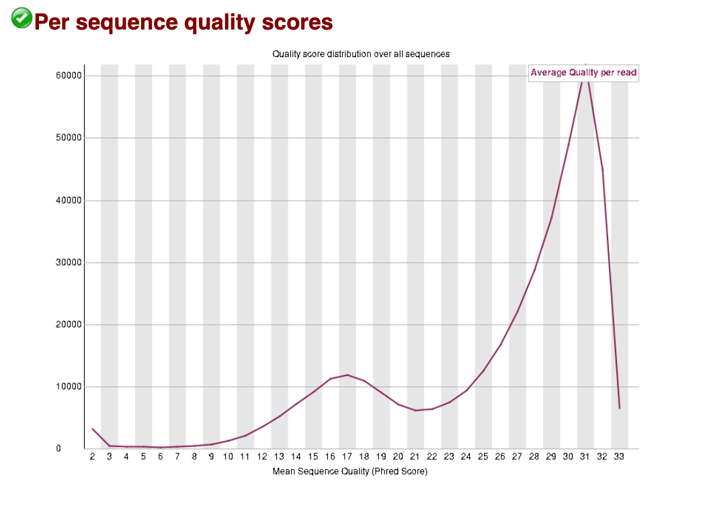

Genomic data wrangling and processing
Your data is now on a server/cloud/compute system/local computer, ready for analysis. Now what?
Command-line interface (CLI) vs graphical user interface (GUI)
Command line interface (CLI) and graphic user interface (GUI) are different ways of interacting with a computer’s operating system. They have different pros and cons. Most people are familiar with the GUI (i.e., point and click) as it is the default interface for most software, particularly on Windows and Mac OS. When using the GUI, you see and interact with visual representations of files, folders, applications, and most other functions of your computer. When using the CLI, you work largely with text representations of software, files, folders, input and output. The shell is a program that allows you to control your computer by typing instructions on the CLI with a keyboard.
There are several reasons to learn how to use the CLI:
- For most bioinformatics tools, there are no graphical interfaces. If you want to work in metagenomics or genomics, you’re going to need to use the CLI/ shell.
- The shell gives you power and allows you to work more efficiently. Tasks that are repetitive (e.g. renaming hundreds of files) can be automated. Tasks that are tedious (e.g. testing a range of input parameters) can be simplified.
- To use remote computers or cloud computing, you often need to use the shell.
Here we will not show you how to use the CLI; we recommend checking out our workshops on Introduction to Shell and Intermediate Shell.
Note: you’ll hear the terms ‘shell’, ‘bash’, ‘unix’, ‘terminal’ and ‘command-line’ used almost interchangeably. For beginners, you can think of them as essentially all the same thing! As you gain more computational skills, you can dig into the differences.
Understanding genomic file types
The files you will get back from the sequencing facility will most likely end in .fastq.gz
The .gz indicates it is a compressed gzip file. For most genomic analyses, you do not need to unzip these first–this saves you storage space, as unzipped files can be double or triple the zipped size! Your zipped sequence read files will likely be around 1-10 GB per file.
The fastq indicates the file is in FASTQ format. FASTQ files are a text-based format that stores the raw read sequences, along with a quality score for each base.
The first 4 lines of a fastq file describe one sequence read:

The first line is the header information, beginning always with an @. This is the instrument-specific, run identifier and read identifiying information.
V350304715= instrument-specific
L3= lane 3 on the flow cell. Can be used for troubleshooting if something globally went wrong with sequencing.
C001= cluster identifier (can be used for troubleshooting, same as above).
R001= Read 1. All the reads in this file are read 1. If you have paired-end data, you’ll have a corresponding read 2 file.
00020454= unique identifier for that read./1= indicates this is a pair member. Only paired-end data have the/1or/2additional identifier.
Each instrument and chemistry will have slightly different header information. The main thing to look out for are indications of the data being read 1 or read 2 (indicates antisense or sense strand data, for protocols that can differentiate strandedness) and whether it is part of a mate pair (indicated by the /1 or /2)
The second line is the actual sequence. Count the number of bases – which read length was chosen for this dataset? (It’s ok you don’t have to count - it’s 100)
The third line is just a “+”. This can be optionally followed by the same sequence identifier (and any description) again.
The fourth line is the quality score. Each base in line 2 has a corresponding quality score, indicated by an ASCII character in line 4.
From left to right, these are the quality scores in increasing order of quality:
!"#$%&'()*+,-./0123456789:;<=>?@ABCDEFGHIJKLMNOPQRSTUVWXYZ[\]^_`abcdefghijklmnopqrstuvwxyz{|}~So, if a single base has a quality score of !, which corresponds to a Q-score of 0, this indicates exceptionally poor quality. The sequencing machine was not able to resolve which base it should be. Often these will be shown as N’s.
Conversely, if a single base has a quality score of I, which corresponds to a Q-score of 40, this indicates very high quality. The sequencing machine was “very confident” that the base called is correct (Q40 indicates an error probabilty of 0.0001, i.e., a 1 in 10,000 chance of the base being called wrong, on average. I is near the upper end of typically achieved quality values, but higher is possible.
For more on quality scores, you can also read this Illumina guide here. Note there are different types of encoding, but you will most frequently encounter Phred+33.
We can assess the quality score across all reads using software called FastQC, and trim down reads to remove poorer quality bases below a set threshold (generally with newer sequence data, you can use Q30 or Q40 as a cut-off). We won’t cover trimming here, see our workshop on RNA-seq Data Analysis for a step-by-step guide.
ONT
Nanopore sequencing works quite differently to Illumina and PacBio. The default read output is POD5 and this is converted to unaligned bam.
How are most seq facilities sending these reads to people?
ONT is pod5 -> bam (unaligned)
Other genomic file types
We’ve talked about fastq and gz files types, but there are some other common genomic file types you should know about.
You should also be aware that the extension on the file type is largely there just so you as a human know what kind of file it is. When using the CLI, the computer does not care what the extension says.
| Extension | Name | Description |
|---|---|---|
.fasta or .fa, .fna, .faa |
FASTA, FASTA nucleic acid, FASTA amino acid | Contains sequence data. Each sequence starts with a single header line starting with a >, followed by the nucleotide (or amino acid in case of .faa) sequence on the second line. No quality encoding included. |
.bam .sam |
Binary/Sequence Alignment Map | Contains alignment information of your reads/sequences that are mapped against a reference sequence (e.g., genome). BAM are the compressed, computer-readable only version; SAM are human-readable but larger files. Somewhat interchangeable file types. Note for ONT files, the bam file is often used in an un-aligned format. You may also encounter .cram files, which are Compressed Reference-oriented Alignment Map designed to be an efficient reference-based alternative to bam/sam |
.vcf |
Variant Call Format | Contains sequence variants called relative to a reference genome. Split into two sections; the header information and the records. See our Intro R workshop, section on VCF files. |
.gtf or .gff |
General Transfer Format or General Feature Format | Contains genome annotation data. |
Real examples:
FASTA file containing cds data from a genome, opened in a text editor. Each sequence is preceded by one header line, beginning with an ‘>’ symbol. 
The sequence starts with a start codon ‘ATG’ and ends with a stop codon ‘TAA’. Also, “cds” can be seen in the header lines as part of the sequence accession identification.
SAM file, opened in a text editor. Note all lines in the header section starts with an ‘@’ symbol, and the number of lines in the header section is variable. There are 11 mandatory fields in the alignment section (not all visible here as they run off the window to the right). 
VCF file opened in excel. Instead of the header sections seen in the other file types, here each column has a name. (not all columns visible as they run off the window to the right) 
GTF file opened in a text editor. Note all lines in the header section start with a ‘#’ symbol. Generally each GTF file you encounter will all have 4 or 5 lines in the header section, but the alignment section will vary in size based on number of annotations.

FASTQC - quality scoring of raw reads
All fastq files, regardless of which kind of sequencing was performed, should be interrogated using a program called FastQC. Most HPC services (e.g., REANNZ) come with this program (and many other commonly used programs) pre-installed, so you likely will not need to install it anywhere.
Two of our genomic analysis workshops (RNA-Seq Data Analysis and Microbial genome assembly) teach you how to run fastqc on your files. Here, we will give you an introduction to what it is and how to interpret the results.
FastQC will give you a good overview of the quality of the reads (i.e., how confidently each base was called by the sequencing platform) and a few other statistics about the reads. Each statistic will be assigned a PASS, WARNING or FAIL:
 PASS WARNING FAIL
PASS WARNING FAIL
The following examples come from the ‘Good Illumina Data’ and ‘Bad Illumina Data’ reports from the Babraham Bioinformatics website.
Caveat: FastQC can be run on any
.fastqdata, but the pass, warning, fail metrics are based on Illumina data. ONT data in particular may receive fails, even when it is perfectly usable.
EXAMPLES: Good vs bad sequence data
Below are the summarised pass, warning, fail statistics for the good (left) and bad (right) data. 
Here we will choose a few of these statistics as examples to delve into:
Per base sequence quality
The per base sequence quality is the first plot you can use to assess the quality. You can picture the reads as being all stacked on top of each other, and the average quality at each position (x-axis) shown as a boxplot (i.e., position 1 shows a boxplot of the quality scores of base pair #1 in all reads, position 2 shows a boxplot for base pair #2, and so on).
The quality score is shown on the y-axis. A score of below Q20 (error probabilty = 0.01, or 1 in 100 bases are incorrect on average) is shown as red - boxplots that extend in to this section indicate positions in the read that are poor quality.
In general, when you are trimming your reads you should pick a quality cut off of at least Q30 (error probabilty = 0.001; 1 in 1000), and some researchers even use Q40 (error probabilty = 0.0001; 1 in 10,000) for newer data. If you are working with older data (10+ years old, sequenced before ~2014), you may need to pick Q20 as a cut-off. These plots help you decide what is best for your data.
After trimming reads, you should run FastQC again to compare how the average quality has changed and see how many reads are retained after trimming.
In this ‘good data’ below, all boxplots sit easily in the green range. These reads are excellent quality (i.e., the sequencing itself worked very well).
Good data: Per base sequence quality 
In this ‘Bad data’ below, we can see most reads are dropping in to the Q20 and below range from about base position 24 onwards to position 40. This is a typical pattern, where sequence quality tends to drop off around the 3’ end for Illumina reads (even for good data – and typically for paired end data, the 3’ end of read 2 tends to be slightly poorer quality than read 1).
Bad data: Per base sequence quality 
Per sequence quality scores
The per sequence quality scores plots the Q-score per sequence, rather than per base position as we saw above. The average Q-score for the whole read is taken, then plotted to show how many reads have that average score. Below we can see that for the good data and bad data, almost all reads sit above Q30.
Good data: Per sequence quality scores 
For the bad data, we can see that the larger peak of reads sits at a slightly lower (and wider) Q score, and there is a second peak at a very poor score of around Q17. These data show us that there may be a large proportion of reads with a high Q-score retained after trimming (good news!). The data has been given a ‘pass’ by FastQC, indicating it has not dropped below the threshold for this category to be given a warning or fail.
Bad data: Per sequence quality scores 
Overrepresented sequences
Multiple sources can cause overrepresented sequences in your dataset. It can be a true biological or experimental effect, for example if you expect a few genes to be exceptionally highly expressed or if you have done targeted amplicon sequencing. However, it often reflects an issue that may have happened during extraction or library prep. Contaminating rRNA is a common culprit in RNAseq, as rRNA exists at a much higher concentration than other mRNAs in the cell. You may have to make a judgement call whether your data is still useable if it is highly contaminated. While contaminating reads can be filtered out, you’ll have less useable reads. PCR overamplification during the library prep can also cause overrepresentation - in which case it may be possible to repeat part of the library prep with less PCR cycles.
For our good data, no overrepresented sequences were detected:
Here is a snippet of our bad data, showing a ‘warning’ with multiple overrepresented sequences detected, and the count and percentage of the total reads is also shown:

FastQC looks for hits that are matches in a database of common contaminants. No hit was detected for any of these sequences, but it is worth BLASTing some of the highest count sequences to find the culprit.
Good genome, bad genome?
This section sits out a little odd here, but I think its needed in the workshop. To me its sort of ‘wrangling your brain’ around genomes
You will often hear geneticists refer (somewhat colloquially) to “good” and “bad” genome assemblies. But what does this actually mean? And how can you tell whether a species you are working on has a good genome assembly?
In practice, we assess genome assemblies using a few metrics that capture the three C’s: contiguity, correctness, and completeness.
In our Long read genome assembly workshop, we go into further detail on how to assess these metrics. For now, we’ll focus on an overview to get you started:
Common genome assembly metrics
Contiguity describes how complete or fragmented the genome assembly is. Because we can’t sequence an entire chromosome in one long piece, the genome is first broken into many smaller fragments during library prep and sequencing. The more pieces we can put together (i.e., assemble) to make longer strings of sequence, the more contiguous our assembly is. Contiguity is commonly summarised using contig N50 and scaffold N50. The N50 is a length statistic and you can think of it as similar to the median. The N50 value is the length of the first contig that is equal to or greater than half of the assembly sum. In simple terms, the larger than better. A larger N50 means that more of the genome is contained in longer sequences. In this era of long-read genome assemblies, a contig N50 over 1 Mb is generally considered good - see Excerpt from PacBio article.
Completeness can be measured in multiple ways, but it is often measured using a BUSCO (Benchmarking Universal Single-Copy Orthologs) score. This measures completeness using sets of conserved, single-copy genes expected to be present in most species within a specified lineage, which are reported as percentages of complete, duplicated, fragmented, and missing genes, to a total of 100%. Essentially, we check to see if a bunch of genes we expect to see in every species are present in our assembly.
Correctness describes the base pair and structural accuracy of the genome. It can be measured by comparing your assembly to a reference genome. There are a few limitations to this approach, namely that if a good reference genome for your species does not exist you will have to use a different approach (for which there are solutions - see our long read genome assembly workshop link above).
Genome assemblies can be described more qualitatively as (in order of least to most complete):
- Contig-level – sequences are assembled but not ordered or oriented. Often can be thousands to hundreds of thousands of contigs.
- Scaffold-level – contigs linked together, often with gaps. None are placed (i.e., chromosome known) or localised (i.e., orientation on chromosome known).
- Chromosome-level – one or more chromosomes complete, but some unplaced scaffolds may be present.
- Complete genome – all chromosomes are resolved with no gaps. Not necessarily telomere-to-telomere (T2T). Very rare to have a complete genome assembly.
See NCBI Glossary for Assembly level.
What do we mean by a “good” genome?
A good genome assembly is typically one that is:
Highly contiguous
Reads have been assembled into long sequences called contigs, ideally approaching full chromosome lengths.Biologically complete
Most expected genes are present (high BUSCO completeness).Structurally accurate
Large-scale errors such as mis-joins or collapsed repeats are minimised.
Note: often the word ‘contig’ is used to refer to any length of assembled (i.e., contiguous) sequence, regardless of if those sequences could technically be long enough to be called scaffolds or chromosomes.
Assembly quality vs annotation quality
Lastly, it is important to distinguish between:
Genome assembly i.e., the reconstructed DNA sequence itself, and the Genome annotation, which is the identification and labelling of genomic features, including gene structures (exons, introns, and CDS), non-coding RNAs (e.g., rRNA, tRNA and lncRNA), and associated identifiers such as gene_id, transcript_id, and database cross-references.
A genome can be well assembled but poorly annotated, or vice versa.
Watch out! It can be tempting based on the BUSCO score to conclude that the “annotations” for a genome are quite good (or bad). The BUSCO score IS NOT the genome annotation; it is an independent analysis of a set of known genes. The annotation file itself (scroll up to section Understanding genomic file types for description of annotation files such as GTF files) is not being assessed when we look at the BUSCO score.
EXERCISES 🧠🏋️♀️ (8 mins):
How would you describe these genomes?
Look at the assembly stats and evaluate how ‘good’ you think each assembly is.
Note: RefSeq is the curated database. GenBank is the non-curated, anyone-can-submit-to database. They can be different, but not always. Use the RefSeq stats to make your decision.
Link here to Human Genome assembly GRCh38.p14


Jot down your thoughts before looking at the solution below.
Here are some points to help you:
- What is the assembly level and where does that fall on our scale level of contig -> scaffold -> chromosome -> complete?
- How many chromosomes, if any, are resolved? (Hint: if there are any resolved it is a good assembly!)
- What is the scaffold N50? Is it above 1Mb? (typically considered a fairly good assembly if >1 Mb).
- What is the BUSCO score? Is it approaching 100% complete?
- The assembly is at Chromosome level - indicates very high quality.
- The BUSCO score is 98.9% - very close to complete.
- The number of scaffolds (470) and contigs (996) are very low at less than a thousand each, indicating the majority of sequences are assembled into the chromosomes. Further, the scaffold and contig N50s are very high, well over 1 Mb, indicating further that the majority of these sequences are very long contiguous sequences.
Conclusion: this is a very good genome assembly.
Link here to Nematostella vectensis (sea anemone) Genome assembly ASM20922v1


Jot down your thoughts before looking at the solution below.
Here are some points to help you:
- What is the assembly level and where does that fall on our scale level of contig -> scaffold -> chromosome -> complete?
- How many chromosomes, if any, are resolved? (Hint: if there are any resolved it is a good assembly!)
- What is the scaffold N50? Is it above 1Mb? (typically considered a fairly good assembly if >1 Mb).
- What is the BUSCO score? Is it approaching 100% complete?
- The assembly is at scaffold level; no chromosomes are resolved - this is a “medium” quality genome.
- The scaffold N50 is <1 Mb; at 472.6 kb - indicating again the quality is “medium” or “average”.
- The BUSCO score is pretty good at 97.7% single copy orthologs resolved - this indicates that the scaffolds resolved are likely long enough and correct enough to resolve the majority of genes. Functionally, this is quite a useable genome at a gene level.
Conclusion: this is a medium or average assembly. Larger scale structural variants may be difficult or erroneous to resolve, but gene level comparisons and analyses could be achieved fairly accurately.
Here is the original paper for the curious: Putnam et al. 2007.
The authors claim the genome reveals “ancestral eumetazoan genomic organization”. How did they assess this and what conclusion did they make about the eumetazoan ancestor resemblance to modern vertebrates, sea anemones and protosomes? Do you think they had a ‘good’ enough genome to assess this?
Summary
close off with a quick summary of what the workshop has covered,
a bullet point list of other GA workshops (with links) and a one sentence description of what is covered.